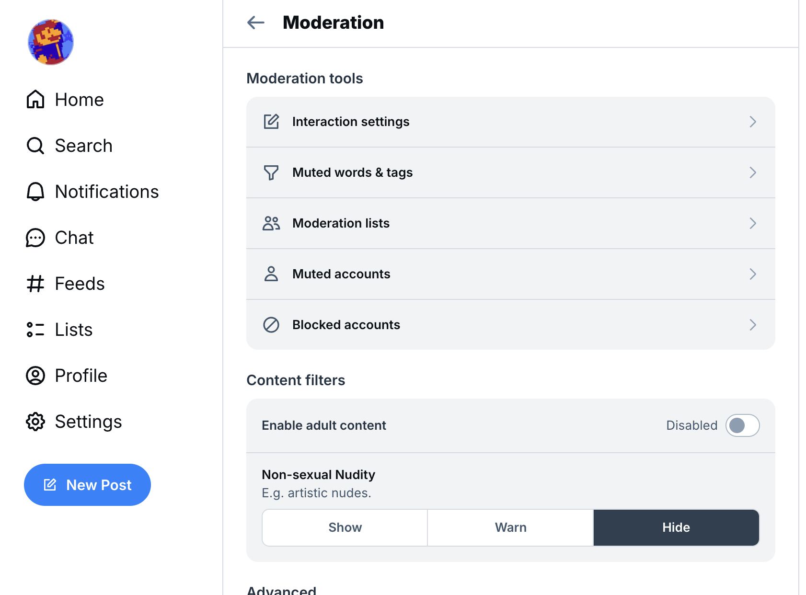

Hello! Welcome to the rules of SA64 page. This is for rules about how I operate on the internet that I will try to follow. I know there are things that I have to speak about that not everyone wants to hear, so I felt it warranted a seperate page.
I don't swear directly, but I might use pseudonyms for swearing so I can say I don't swear. Doesn't mean a swear couldn't escape accidentally.
No, I'll never do that. I'll die before I use a slur ever.
First and foremost, I do not support any form of grooming minors! It is an awful thing that I don't want to do to others.
Generally, if we've already talked before and are good friends, then I'll consider it fine to talk in private. Otherwise, keep any discussions either brief or in a group setting.
In general, if I ever make you uncomfortable or upset, just tell me and I'll try to stop.
I try to not to interact with content of that nature because it's something I don't want to associate with.
I say try because occasionally there are NSFW creators on Bluesky that don't mark their media as Adult Content, probably because Twitter doesn't have a toggle for Adult Content like BSky, so it shows up in Feeds I follow even if I have Adult Content disabled, so I have to report the content for the poster not marking the post correctly.
If you don't believe me, here is my Bluesky Content Filter that I've never changed since creating my account (although, I can't really prove that, can I?).
